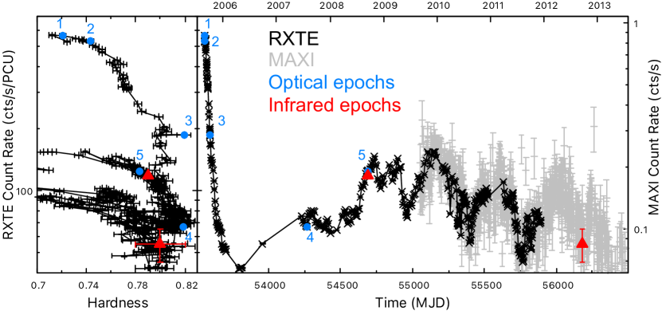
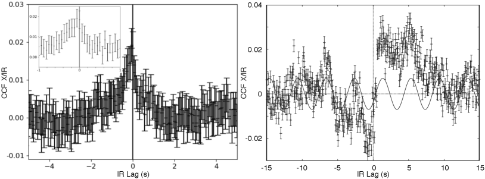
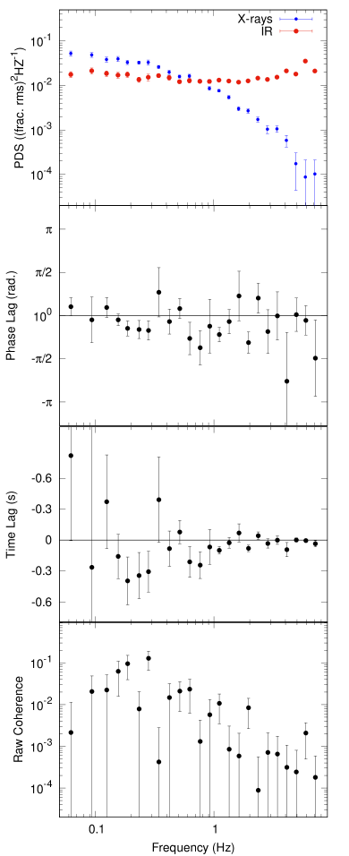
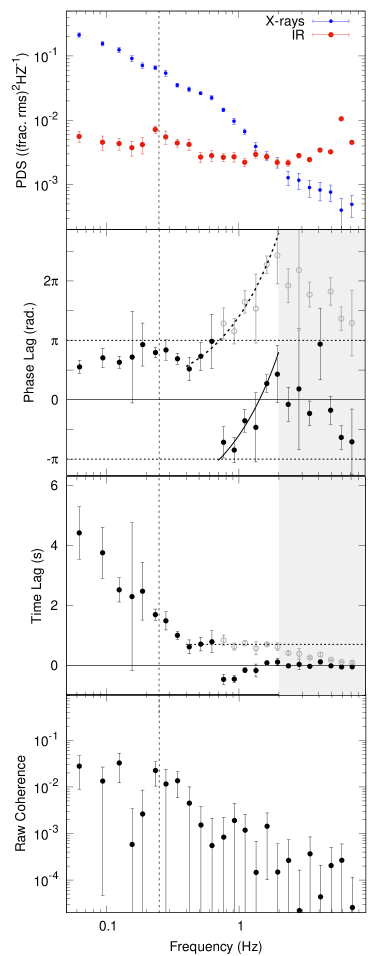
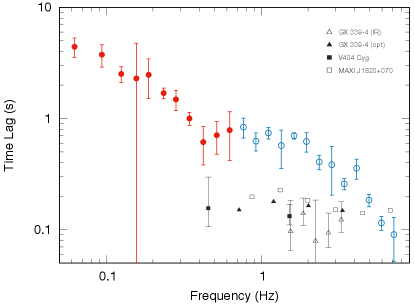
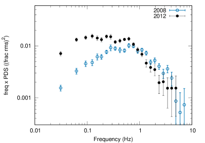
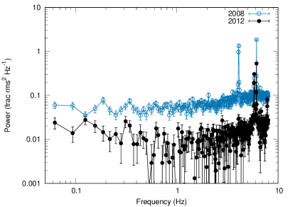

11email: alberto.ulgiati@inaf.it 22institutetext: Università degli Studi di Palermo, Dipartimento di Fisica e Chimica, via Archirafi 36, I-90123 Palermo, Italy 33institutetext: Instituto de Astrofísica de Canarias, E-38205 La Laguna, Tenerife, Spain 44institutetext: Departamento de Astrofísica, Universidad de La Laguna, E-38206 La Laguna, Tenerife, Spain 55institutetext: INAF – Osservatorio Astronomico di Roma, via Frascati 33, I-00078 Monteporzio Catone, Italy 66institutetext: Department of Physics and Astronomy, FI-20014 University of Turku, Finland 77institutetext: Nordita, Stockholm University and KTH Royal Institute of Technology, Hannes Alfvéns väg 12, SE-10691 Stockholm, Sweden 88institutetext: Department of Physics & Astronomy, Texas Tech University, Box 41051, Lubbock, TX, USA, 79409-1051 99institutetext: Center for Astrophysics and Space Science (CASS), New York University Abu Dhabi, P.O. Box 129188, Abu Dhabi, UAE 1010institutetext: Anton Pannekoek Institute, University of Amsterdam, Science Park 904, 1098 XH Amsterdam, The Netherlands 1111institutetext: INAF, Osservatorio Astronomico di Brera, via E. Bianchi 46, I-23807 Merate (LC), Italy 1212institutetext: Dipartimento di Fisica, Università degli Studi di Roma “Tor Vergata”, via della Ricerca Scientifica 1, I-00133 Rome, Italy 1313institutetext: University of Oxford, Department of Physics, Astrophysics, Denys Wilkinson Building, Keble Road, OX1 3RH, Oxford, United Kingdom 1414institutetext: Centre for Advanced Instrumentation, Department of Physics, Durham University, Durham, UK 1515institutetext: Dipartimento di Fisica, Università degli Studi di Cagliari, SP Monserrato-Sestu km 0.7, 09042 Monserrato, Italy 1616institutetext: School of Physics and Astronomy, University of Southampton, Southampton, Hampshire SO17 1BJ, UK 1717institutetext: Department of Physics and Astronomy, Wheaton College, Norton, MA 02766, USA 1818institutetext: IRAP, Université de Toulouse, CNRS, UPS, CNES, Toulouse, France
رصد سريع بالأشعة السينية/تحت الحمراء للثقب الأسود العابر Swift J1753.5–0127: من تقدّم في تحت الحمراء إلى تأخّر نفاثي طويل جداً
نقدّم تقريراً عن حقبتين من الرصدات المتزامنة في النطاق القريب من تحت الحمراء (IR) وبالأشعة السينية، بدقة زمنية دون الثانية، للمرشّح ذي الثقب الأسود في ثنائية الأشعة السينية منخفضة الكتلة Swift J1753.5–0127 أثناء اندلاعه الطويل في عام 2005–2016. جُمعت البيانات بتزامن صارم باستخدام VLT/ISAAC (النطاق KS، 2.2 ) وRXTE (2-15 keV) أو XMM-Newton (0.7-10 keV). نجد ارتباطاً واضحاً بين الانبعاث المتغير في الأشعة السينية وفي تحت الحمراء خلال الحقبتين كلتيهما، لكن بخصائص شديدة الاختلاف. ففي الحقبة الأولى، يتقدّم التغيّر في القريب من تحت الحمراء على الأشعة السينية بمقدار . وهذا معاكس لما يُرصد عادة في الأنظمة المشابهة. ويكون الارتباط أكثر تعقيداً في الحقبة الثانية، مع وجود لا-ارتباط وارتباطات عند تأخّرات سالبة وموجبة. تتيح لنا دراسة فورييه المحلولة ترددياً تحديد مكوّنين رئيسيين في البنية المعقدة لتأخّرات الطور: المكوّن الأول، المتميّز بتأخّر للقريب من تحت الحمراء يبلغ بضع ثوان عند الترددات المنخفضة، متّسق مع توليفة من إعادة معالجة القرص وتدفّق ساخن ممغنط؛ أما المكوّن الثاني فيُحدَّد عند الترددات العالية بتأخّر للقريب من تحت الحمراء قدره 0.7 s. وبالنظر إلى أوجه الشبه بين هذا المكوّن الثاني والتأخّر النفاثي الثابت المعروف جيداً في البصري/القريب من تحت الحمراء والمرصود في عابرات ثقوب سوداء أخرى، فإننا نفسّر هذه السمة تفسيراً أولياً على أنها علامة على تأخّر نفاثي أطول من المعتاد. ونناقش الآثار الممكنة لقياس مثل هذا التأخّر النفاثي الطويل في عابر ثقب أسود خافت راديوياً.
Key Words.:
فيزياء الثقوب السوداء – الأشعة السينية: الثنائيات – النفاثة – التدفقات الخارجة – التراكم1 المقدمة
العابرات ذات الثقوب السوداء (BHTs) هي ثنائيات أشعة سينية منخفضة الكتلة (LMXBs) تُظهر فترات طويلة من السكون تقطعها فترات أقصر من النشاط (من أسابيع إلى سنوات) تُسمّى اندلاعات (Remillard and McClintock 2006). وخلال مثل هذه الأحداث، تُظهر هذه الأنظمة انبعاثاً قوياً ومتغيراً عبر جزء كبير من الطيف الكهرومغناطيسي، من الراديو إلى الأشعة السينية الصلبة. وقد حُدّدت ثلاثة مكوّنات رئيسية تسهم في هذا الانبعاث متعدد الأطوال الموجية. ويُعتقد أن الانبعاث الحراري من قرص تراكم مُشعَّع مسؤول عن الانبعاث من الأشعة السينية اللينة إلى النطاق البصري-تحت الأحمر (O-IR). (Shakura and Sunyaev 1973). وترتبط فوتونات الأشعة السينية الصلبة بتشتت كومبتون العكسي بفعل مجموعة من الإلكترونات النشطة، ويُشار إليها غالباً باسم ”الهالة” (Esin et al. 1997; Poutanen et al. 1997). وتشير الحجج المتصلة بطاقة الهالة إلى أنه لا بد أن تكون واقعة في المناطق الداخلية جداً من تدفّق التراكم، مع أن هندستها الفعلية لا تزال موضع نقاش (Done et al. 2007; Poutanen et al. 2018; Bambi et al. 2021). وتفترض بعض النماذج أن الهالة ممغنطة، مما يسبب انبعاثاً إضافياً عند طاقة أدنى، مثل النطاق البصري أو حتى تحت الأحمر، عبر انبعاث السنكروترون (Merloni et al. 2000). وأخيراً، تُرصد أيضاً نفاثات مستقرة ومضغوطة – وهي تيارات موازاة من المادة تُقذف في الاتجاه العمودي على مستوى التراكم بسرعات شبه نسبية (Blandford and Königl 1979; Fender 2001) - بطيف سنكروتروني مسطّح نموذجي يمتد من الراديو إلى الأطوال الموجية البصرية-تحت الحمراء (Hjellming and Johnston 1988; Corbel and Fender 2002).
تُظهر BHTs أثناء اندلاعاتها حالتين طيفيتين رئيسيتين: حالة أشعة سينية صلبة، حيث يهيمن على الانبعاث الشديد التغيّر فوتونات الأشعة السينية العالية الطاقة المنبعثة من الهالة، وحالة أشعة سينية لينة، حيث يهيمن الانبعاث الحراري المستقر المنخفض الطاقة من القرص على طيف الأشعة السينية (Belloni et al. 2011). وتُرصد نفاثة دائماً عندما يكون المصدر في حالته الصلبة، في حين لم يُكتشف قط مصدر راديوي مضغوط في الحالة اللينة (Maccarone et al. 2020)، مما يشير إلى أن النفاثة تخمد، ما لم تكن قد غيّرت خصائص إصدارها الإشعاعي جذرياً (Casella and Pe’er 2009;Drappeau et al. 2017; لكن انظر Koljonen et al. 2018)
تُظهر معظم BHTs تطوراً متشابهاً: فهي تبدأ اندلاعها في الحالة الصلبة (Belloni et al. 2005)، وتحافظ تقريباً على الصلادة نفسها مع ازدياد اللمعان. ثم تخضع لانتقال من الحالة الصلبة إلى اللينة. وخلال هذا الانتقال، يمر المصدر بما يُسمّى الحالة الصلبة-المتوسطة، التي تتناقص فيها معظم المقاييس الزمنية المميزة لتغيّر الأشعة السينية، ويُلاحظ خمود الانبعاث من النفاثة المدمجة المستقرة، ثم يمر بحالة لينة-متوسطة قصيرة العمر، غالباً ما ترتبط بها قذفات منفصلة وقوية، مباشرة قبل دخوله الحالة اللينة (مثلاً Fender et al. 2009). وعندما يكون المصدر في الحالة اللينة ينخفض لمعانه على نحو شبه منتظم إلى أن يُرصد انتقال عائد إلى الحالة الصلبة، تظهر خلاله من جديد انبعاثات النفاثة المدمجة وتزداد حتى يعود المصدر في النهاية إلى السكون عند جميع الأطوال الموجية (Corbel et al. 2013). ومع أن هذا النمط يُرصد بانتظام في معظم BHTs، فإن بعض الاندلاعات لا تمر بالدورة الكاملة، إذ لا تبلغ الحالة اللينة مطلقاً (أو حتى لا تغادر حالتها الصلبة) قبل أن تبدأ هبوطها نحو السكون (وهي ما تسمى ”اندلاعات الانتقال الفاشل”، انظر مثلاً Brocksopp et al. 2004; Alabarta et al. 2021, والمراجع الواردة فيه).
يمكن رصد تغيّر كبير السعة عند جميع الأطوال الموجية وعلى مقاييس زمنية مختلفة تبعاً للحالة. ولا بد أن تكون المكوّنات المصدرة المختلفة مترابطة، سواء عبر المادة المتدفقة إلى الداخل/الخارج نفسها أو عبر الإشعاع؛ ومن ثم فإن دراسة الارتباط بين التغيّر عند أطوال موجية مختلفة تؤدي دوراً رئيسياً في فهم آليات الانبعاث، وفي قياس المعلمات الفيزيائية للنظام، وفي استقصاء الروابط بين مناطق الانبعاث المختلفة. وعلى وجه الخصوص، تتيح لنا دراسة الارتباط بين الانبعاثات متعددة الأطوال الموجية بدقة زمنية عالية سبر المناطق القريبة مباشرة من الجسم المدمج (Zdziarski and Gierliński 2004; Gilfanov 2009; Remillard and McClintock 2006; Belloni and Stella 2014; Poutanen and Veledina 2014).
فتح تطوير مقاييس ضوئية سريعة في النطاق البصري-تحت الأحمر ذات كفاءة كمية عالية إمكانية دراسة التغيّر السريع من هذه الأنظمة عند طاقات أدنى وربطه بالسلوك في الأشعة السينية. وبعد حفنة من الأعمال الرائدة في عقد 1980 (Motch et al. 1982, 1983)، كشفت أول دراسة للارتباط المتبادل بين الأشعة السينية والبصري في XTE J1118+480 عن وجود صلة معقدة بين النطاقين (Kanbach et al. 2001). وقد أظهر شكل دالة الارتباط المتبادل لا-ارتباطاً عند تأخرات سالبة (ما يُسمّى هبوط الإدراك المسبق) أعقبه استجابة طويلة عند s، فُسرت بوجود خزان طاقة مشترك بين الهالة (المصدرة للأشعة السينية) والنفاثة (البصرية) (Malzac et al. 2004). وقد رُصد وجود لا-ارتباط بين الأشعة السينية وO-IR، وكذلك استجابات بصرية طويلة (بضع  s)، في عدد قليل من المصادر الأخرى، مثل Swift J1753.5–0127 (Durant et al. 2008, 2011)، وMAXI J1535–571 (Vincentelli et al. 2021)، وMAXI J1820+070 (Paice et al. 2021). واقتُرحت نماذج بديلة لتفسير هذا السلوك. ومن أنجحها ما يُسمّى “نموذج التدفق الساخن الممتد”، الذي يفترض أن الضوء البصري ينشأ من إشعاع سنكروتروني من المناطق الخارجية لهالة ممغنطة، في حين تنشأ الأشعة السينية من انبعاث كومبتون الذاتي للسنكروترون (Veledina et al. 2011).
s)، في عدد قليل من المصادر الأخرى، مثل Swift J1753.5–0127 (Durant et al. 2008, 2011)، وMAXI J1535–571 (Vincentelli et al. 2021)، وMAXI J1820+070 (Paice et al. 2021). واقتُرحت نماذج بديلة لتفسير هذا السلوك. ومن أنجحها ما يُسمّى “نموذج التدفق الساخن الممتد”، الذي يفترض أن الضوء البصري ينشأ من إشعاع سنكروتروني من المناطق الخارجية لهالة ممغنطة، في حين تنشأ الأشعة السينية من انبعاث كومبتون الذاتي للسنكروترون (Veledina et al. 2011).
ومن السمات الشائعة الأخرى التي رُصدت في هذه الأنظمة تأخر ضيق ومتناظر مقداره  0.1 s بين الأشعة السينية وانبعاث O-IR (Casella et al. 2010; Gandhi et al. 2010, 2017). وبالنظر إلى خصائصه، فمن المقبول عموماً أن هذه السمة ناتجة عن تقلبات في معدل تراكم الكتلة (منبعثة في الأشعة السينية) تُحقن في النفاثة ويُعاد إصدارها كإشعاع سنكروتروني، ربما عبر تشكّل صدمات (Malzac 2014; Malzac et al. 2018; Vincentelli et al. 2018, 2019; Paice et al. 2019; Tetarenko et al. 2021).
0.1 s بين الأشعة السينية وانبعاث O-IR (Casella et al. 2010; Gandhi et al. 2010, 2017). وبالنظر إلى خصائصه، فمن المقبول عموماً أن هذه السمة ناتجة عن تقلبات في معدل تراكم الكتلة (منبعثة في الأشعة السينية) تُحقن في النفاثة ويُعاد إصدارها كإشعاع سنكروتروني، ربما عبر تشكّل صدمات (Malzac 2014; Malzac et al. 2018; Vincentelli et al. 2018, 2019; Paice et al. 2019; Tetarenko et al. 2021).
تتيح البيانات عالية الوتيرة والمتساوية العينة إجراء تحليل طيفي (تبادلي) في مجال فورييه لهذه الأنظمة، مما أدى إلى اكتشاف تذبذبات شبه دورية في O-IR (QPOs، Motch et al. 1983; Gandhi et al. 2010; Kalamkar et al. 2016; Vincentelli et al. 2019). وقد دُرست QPOs من LMXBs في الأشعة السينية لعقود، لكن أصلها لا يزال موضع نقاش (انظر مثلاً Ingram and Motta 2019, والمراجع الواردة فيه). وتبيّن أن خصائص أكثر QPOs رصداً على نحو شائع (والمعروفة أيضاً بالنوع C، انظر Casella et al. 2005, والمراجع الواردة فيه) تعتمد على ميلان الثنائية (Motta et al. 2015). ويدعم ذلك تفسيرها من حيث تدفق داخلي يترنّح. وفي هذا السيناريو، وُصفت النظائر البصرية-تحت الحمراء لـ QPOs من النوع C من حيث انبعاث سنكروتروني من نفاثة تترنّح مع التدفق الساخن، أو من التدفق الساخن (الممغنط) نفسه.
استندت معظم الجهود التفسيرية للتغيّر السريع المرصود في O-IR/الأشعة السينية من LMXBs حتى الآن إلى حقب رصد مفردة، نظراً إلى ندرة الحملات متعددة الحقب. وقد حدّ ذلك من إمكانية ربط السلوكيات المرصودة المختلفة ضمن سيناريو تفسيري واحد. ويمثل Swift J1753.5–0127 أحد أفضل الاستثناءات لذلك. اكتُشف هذا العابر في يونيو 2005 حين بدأ اندلاعه الأول، الذي استمر نحو 10 سنوات (Soleri et al. 2010, 2013; Plotkin et al. 2017; Debnath et al. 2017; Bu et al. 2019, والمراجع الواردة فيه؛ الشكل 1). وبقي المصدر معظم الوقت في الحالة الصلبة، مع انتقالات عارضة إلى الحالة الصلبة-المتوسطة، وانتقال قصير العمر أُبلغ عنه إلى الحالة اللينة (Shaw et al. 2016, الشكل 1، اللوحة اليسرى). وتشير دراسة اكتشاف تعديل محتمل من نوع super-hump مدته 3.24hr (Zurita et al. 2008) إلى أن النظام يملك واحدة من أقصر الفترات المدارية بين BHTs (Corral-Santana et al. 2016; Tetarenko et al. 2016).
نظراً إلى اندلاعه الطويل والغريب، كان هذا النظام هدفاً لعدة رصدات في O-IR وبالأشعة السينية (Veledina et al. 2017, والمراجع الواردة فيه)، مما أتاح دراسة تطور التغيّر السريع في الأشعة السينية/البصري. وقد أعاد نموذج التدفق الداخلي الساخن المذكور آنفاً إنتاج هذا التطور جيداً، مشيراً إلى تطور في بنية التدفق أثناء الاندلاع (Veledina et al. 2017). في هذا العمل، نعرض حقبتين من القياس الضوئي المتزامن بالأشعة السينية/تحت الحمراء بدقة زمنية عالية (أي دون الثانية) لهذا المصدر.

 سنة والذي بدأ في 2005. تمثل النقاط السوداء بيانات RXTE/PCA: يقع معدل العد في مجال الطاقة keV، في حين أن الصلادة هي النسبة بين المعدلات في مجال keV والمعدلات في مجال الطاقة keV. وتمثل النقاط الرمادية بيانات MAXI (
سنة والذي بدأ في 2005. تمثل النقاط السوداء بيانات RXTE/PCA: يقع معدل العد في مجال الطاقة keV، في حين أن الصلادة هي النسبة بين المعدلات في مجال keV والمعدلات في مجال الطاقة keV. وتمثل النقاط الرمادية بيانات MAXI ( keV). وتشير النقاط الزرقاء إلى حقب القياس الضوئي البصري السريع الخمس التي تناولها Veledina et al. (2017)، في حين تشير المثلثات الحمراء إلى حقبتي القياس الضوئي السريع في تحت الحمراء المعروضتين في هذا العمل. وقد قُدّر موضع حقبة تحت الحمراء الثانية في HID وأشرطة الخطأ الخاصة بها من معدل العد المحجّم لـ MAXI ومن النسبة (غير المعروضة هنا) بين معدلات العد المحجّمة لـ Swift/BAT وMAXI، وينبغي عدّها مؤشراً فقط إلى الموضع التقريبي للمصدر في HID في تلك الحقبة، نظراً إلى انخفاض نسبة الإشارة إلى الضجيج في بيانات MAXI وBAT كلتيهما. لاحظ أن الانتقالات اللينة للمصدر في HID (التي تبلغ قيماً منخفضة تصل إلى 0.3) لم تُرسم توخياً لوضوح العرض (انظر Bu et al. 2019, لتمثيل كامل المدى لـ HID).
keV). وتشير النقاط الزرقاء إلى حقب القياس الضوئي البصري السريع الخمس التي تناولها Veledina et al. (2017)، في حين تشير المثلثات الحمراء إلى حقبتي القياس الضوئي السريع في تحت الحمراء المعروضتين في هذا العمل. وقد قُدّر موضع حقبة تحت الحمراء الثانية في HID وأشرطة الخطأ الخاصة بها من معدل العد المحجّم لـ MAXI ومن النسبة (غير المعروضة هنا) بين معدلات العد المحجّمة لـ Swift/BAT وMAXI، وينبغي عدّها مؤشراً فقط إلى الموضع التقريبي للمصدر في HID في تلك الحقبة، نظراً إلى انخفاض نسبة الإشارة إلى الضجيج في بيانات MAXI وBAT كلتيهما. لاحظ أن الانتقالات اللينة للمصدر في HID (التي تبلغ قيماً منخفضة تصل إلى 0.3) لم تُرسم توخياً لوضوح العرض (انظر Bu et al. 2019, لتمثيل كامل المدى لـ HID).2 الرصدات
| MJD | Date | Time Interval (UT) | |
|---|---|---|---|
| Infrared | X-rays | ||
| 54693 | 15 Aug 2008 | 02:40 – 05:35 | 02:50 – 04:58 |
| 56180-1 | 10–11 Sep 2012 | 23:54 – 02:43 | 17:52 – 04:24 |
2.1 بيانات تحت الحمراء
رصدنا Swift J1753.5-0127 في نطاق تحت الحمراء لمدة  ks من التلسكوب الكبير جداً التابع لـ ESO في مرصد بارانال يوم 15 أغسطس 2008 (برنامج ESO 281.D-5034) وخلال الليلة الواقعة بين 10 و11 سبتمبر 2012 (برنامج ESO 089.C-0996): وسنشير إلى هذين التاريخين بالحقبة الأولى والحقبة الثانية على التوالي. وقد حُصل على البيانات باستخدام مرشح مع Infrared Spectrometer And Array Camera (ISAAC) (Moorwood et al. 1998) المركب على تلسكوب UT1/Antu ذي القطر 8.2-m. قُيّد الكاشف بنافذة قدرها pixels لخفض الدقة الزمنية إلى ms. وخُزّنت البيانات التي حصلت عليها الأداة في مكعبات، أي مجموعات من الأطر () جُمعت تباعاً خلال فاصل زمني معيّن (أي
ks من التلسكوب الكبير جداً التابع لـ ESO في مرصد بارانال يوم 15 أغسطس 2008 (برنامج ESO 281.D-5034) وخلال الليلة الواقعة بين 10 و11 سبتمبر 2012 (برنامج ESO 089.C-0996): وسنشير إلى هذين التاريخين بالحقبة الأولى والحقبة الثانية على التوالي. وقد حُصل على البيانات باستخدام مرشح مع Infrared Spectrometer And Array Camera (ISAAC) (Moorwood et al. 1998) المركب على تلسكوب UT1/Antu ذي القطر 8.2-m. قُيّد الكاشف بنافذة قدرها pixels لخفض الدقة الزمنية إلى ms. وخُزّنت البيانات التي حصلت عليها الأداة في مكعبات، أي مجموعات من الأطر () جُمعت تباعاً خلال فاصل زمني معيّن (أي  62 s)، مع فجوات بطول 3 s بينها. وكانت أحوال الطقس في الرصدين متشابهة، مع seeing متوسط يقارب 0.7“. وتبلغ دقة الزمن المطلقة رتبة 10 ملي ثانية (زمن قراءة الكاشف).
62 s)، مع فجوات بطول 3 s بينها. وكانت أحوال الطقس في الرصدين متشابهة، مع seeing متوسط يقارب 0.7“. وتبلغ دقة الزمن المطلقة رتبة 10 ملي ثانية (زمن قراءة الكاشف).
يحتوي مجال الرؤية المختار على الهدف، ونجم “مرجعي” أسطع () يقع على بُعد جنوب هدفنا (وقد استخدمناه لتقليل أثر الاضطراب الجوي في منحنياتنا الضوئية)، ونجمين خافتين “للمقارنة” ( و، يقعان على بُعد نحو جنوب-غرب وجنوب-شرق هدفنا، على التوالي) استخدمناهما لتحسين معلمات الاستخراج. استُخدم خط معالجة ULTRACAM11 1 http://deneb.astro.warwick.ac.uk/phsaap/software/. لخفض البيانات.
وجدنا قدراً متوسطاً لهدفنا خلال الحقبة الأولى (الثانية) مقداره mag ( mag)، وهو ما يقابل فيضاً قدره mJy. ولم نصحح هذه القيم من أجل الامتصاص بين النجمي.
قبل إجراء تحليل التوقيت، صُححت المنحنيات الضوئية في تحت الحمراء إلى مركز كتلة النظام الشمسي باستخدام برنامج MATLAB مخصص (Ambrosino et al.، قيد الإعداد). وبالنظر إلى أهمية هذا التصحيح والأثر المحتمل لأي عدم دقة في نتائجنا، تحققنا تقاطعياً من تصحيحنا لمركز الكتلة باستخدام برنامج آخر 22 2 https://astroutils.astronomy.osu.edu/time/utc2bjd.html ولم نجد فروقاً معنوية.
2.2 بيانات الأشعة السينية
رصدنا Swift J1753.5–0127 في نطاق الأشعة السينية بالتزامن مع بيانات تحت الحمراء في الحقبتين كلتيهما.
بلغ زمن التعريض الكلي للرصد الأول ks، وحُصل عليه بمصفوفة العدادات النسبية (PCA) على متن الساتل Rossi X-ray Timing Explorer (RXTE) (ObsIds: 93105-01-57-00، 93105-01-57-01). وتؤدي ملاءمة طيفية بنموذج قانون قدرة بسيط إلى فيض غير ممتص في 2–10 keV مقداره F ergs/s/cm2 (يقابل لمعاناً L ergs/s عند 8 kpc).
استُخرج منحنى ضوئي في مجال الطاقة  keV بدقة زمنية ms (1/64 s)، باستخدام أدوات HEADAS 6.5.1 القياسية.
keV بدقة زمنية ms (1/64 s)، باستخدام أدوات HEADAS 6.5.1 القياسية.
في الحقبة الثانية، رُصد المصدر لمدة ks بكاميرا Epic-pn (ويشار إليها لاحقاً بـ PN) على متن الساتل XMM-Newton المشغّل في نمط TIMING (ObsID: 0691740201). رشّحنا بيانات PN وفحصناها باستخدام برنامج تحليل العلوم (SAS، Gabriel et al. 2004) بالإصدار v. 19.0.0 مع أحدث ملفات المعايرة. بحثنا عن فواصل محتملة من خلفية جسيمية متوهجة باستخراج المنحنى الضوئي للأحداث المفردة (pattern=0) عالية الطاقة (10.0–12.0 keV)، لكننا لم نجد شيئاً. ثم رشحنا بيانات PN بالإبقاء فقط على الأحداث ذات pattern (نمط البكسل المفرد والمزدوج فقط) والواقعة في منطقة مجال RAWX [30:46]. وأخيراً، صححنا أزمنة وصول فوتونات PN إلى مركز الكتلة باستخدام أداة barycen واعتماد تقويم النظام الشمسي DE-405. وتؤدي ملاءمة طيفية بنموذج قانون قدرة بسيط إلى فيض غير ممتص في 2–10 keV مقداره F ergs/s/cm2 (يقابل لمعاناً L ergs/s عند 8 kpc). واستُخرج منحنى ضوئي بدقة زمنية ms، في مجال الطاقة keV. وتحققنا من أن استخراج المنحنى الضوئي فوق 2 keV فقط لا يؤثر في النتائج على نحو معنوي، ومن ثم قررنا الإبقاء على اختيار الطاقة الكامل لتحسين المردود.
صُححت المنحنيات الضوئية للأشعة السينية في الحالتين كلتيهما إلى مركز كتلة النظام الشمسي باستخدام أدوات HEASoft القياسية. ثم أُعيد تجميع المنحنيات الناتجة لتطابق السلسلة الزمنية المتزامنة في تحت الحمراء وتتراصف معها. وتبلغ دقة الزمن المطلقة لـ RXTE وXMM-Newton 2.5 و48 s على التوالي (Jahoda et al. 2006; Martin-Carrillo et al. 2012).

3 التحليل
3.1 دالة الارتباط المتبادل
لتكميم الارتباط بين نطاقي الأشعة السينية وتحت الحمراء، حسبنا دالة الارتباط المتبادل (CCF) بين السلسلتين الزمنيتين، مطبّعة بحاصل ضرب الانحراف المعياري في كل نطاق، باستخدام الإجراء الموصوف في Gandhi et al. (2010)، عند أعلى دقة زمنية متاحة قدرها 62.5 ms. وتسمح لنا الأجهزة وطريقة تصحيح مركز الكتلة المستخدمة في هذا العمل بقياس التأخرات بدقة توقيتية قدرها بضع عشرات من ms. وتكشف دالتا CCF (الشكل 2) فرقاً واضحاً بين الحقبتين. تملك الحقبة الأولى بنية ذات قمة مفردة تشبه تلك المرصودة في مصادر أخرى (مثلاً Casella et al. 2010)، باستثناء أنها تبلغ القمة عند تأخرات سالبة قليلاً، مما يدل على تقدّم لتحت الحمراء. ونكمّم موضع قمة التأخر بملاءمة دالة لورنتزية مفردة لـ CCF بين s و2 s، فنحصل على تأخر قمّي قدره -0.130.03 s. أما CCF الثانية فلها، عوضاً عن ذلك، بنية أكثر تعقيداً: إذ يعقب هبوط لا-ارتباط عند تأخرات سالبة بين نحو s و0 s قمة ارتباط بين s و s. وكل من الهبوط والقمة منظّمان فيما يبدو على شكل قمم فرعية متعددة. وتكشف نظرة أدق أن هذه القمم الفرعية متسقة مع كونها متباعدة بالتساوي، بدورية 4 s. اختبرنا ذلك بملاءمة دالة جيبية لـ CCF، كما هو مبين في الشكل 2. وهذا متسق مع وجود تذبذب شبه دوري مترابط في النطاقين عند نحو 0.25 Hz، وهو ما يؤكده تحليل طيف القدرة للسلسلة الزمنية في تحت الحمراء (انظر القسم الفرعي التالي). وفي كلتا الحقبتين، قيّمنا السكونية بتقسيم كل تعريض إلى نصفين. ولا تكشف دوال CCF المحسوبة على نحو مستقل لنصفي كل حقبة عن أي فرق معنوي، مما يؤكد أن السلاسل الزمنية ساكنة.
3.2 تحليل طيف القدرة
لتقييم النواتج الطيفية المتبادلة في فورييه اتبعنا الإجراء الذي وصفه Uttley et al. (2014). وفي كلتا الحقبتين، حسبنا تحويل فورييه المتقطع باستخدام 512 حاوية لكل مقطع ومعامل إعادة تجميع لوغاريتمي قدره 1.2 (كل حاوية أطول من سابقتها بنسبة 20%).
تُعرض أطياف كثافة القدرة (PDSs) للأشعة السينية وتحت الحمراء بوحدات الجذر التربيعي المتوسط التربيعي الكسري (Miyamoto et al. 1991) في الشكل 4. طُرح ضجيج العد من PDSs للأشعة السينية، لكن لم يُطرح من PDSs لتحت الحمراء. والسبب أننا وجدنا في PDS لكل من الهدف ونجم المقارنة مكوّناً من الضجيج الأزرق، إلى جانب قمم أداتية زائفة، عند ترددات أعلى من  1Hz (انظر الشكل 7 والنقاش في الملحق A). وبسبب ذلك، وكذلك بسبب إحصاءاتها المنخفضة، لا نمذج PDSs. ومع ذلك، نلاحظ أن مكوّن ضجيج غير مترابط لن يؤثر في قياس التأخرات، بل في سعة CCF فقط (أو بصورة مكافئة في الاتساق الطيفي المتبادل لفورييه). ومع ذلك نلاحظ أن PDS لتحت الحمراء في الحقبة الثانية (الشكل 4، اللوحة العلوية اليمنى) يُظهر فائضاً عند 0.25 Hz. وهذا التردد متسق مع الدورية المرصودة في CCF (الشكل 2، اللوحة اليمنى). وقد كمّمنا هذه السمة بملاءمتها بدالة لورنتزية ونمذجة المتصل المحيط بها بقانون قدرة بسيط. ووجدنا أن QPO معنوي عند مستوى ، مع rms كسري قدره . ونلاحظ الاحتمال الممكن لوجود تعديل في CCF يكون متسقاً مع ارتباطه بـ QPO. ولم نجر أي تحليل إحصائي أعمق لمعنى هذه السمة، لأنه سيتجاوز نطاق هذا العمل.
1Hz (انظر الشكل 7 والنقاش في الملحق A). وبسبب ذلك، وكذلك بسبب إحصاءاتها المنخفضة، لا نمذج PDSs. ومع ذلك، نلاحظ أن مكوّن ضجيج غير مترابط لن يؤثر في قياس التأخرات، بل في سعة CCF فقط (أو بصورة مكافئة في الاتساق الطيفي المتبادل لفورييه). ومع ذلك نلاحظ أن PDS لتحت الحمراء في الحقبة الثانية (الشكل 4، اللوحة العلوية اليمنى) يُظهر فائضاً عند 0.25 Hz. وهذا التردد متسق مع الدورية المرصودة في CCF (الشكل 2، اللوحة اليمنى). وقد كمّمنا هذه السمة بملاءمتها بدالة لورنتزية ونمذجة المتصل المحيط بها بقانون قدرة بسيط. ووجدنا أن QPO معنوي عند مستوى ، مع rms كسري قدره . ونلاحظ الاحتمال الممكن لوجود تعديل في CCF يكون متسقاً مع ارتباطه بـ QPO. ولم نجر أي تحليل إحصائي أعمق لمعنى هذه السمة، لأنه سيتجاوز نطاق هذا العمل.


 0.25 Hz في PDS للحقبة الثانية، والمشار إليه بالخط العمودي المنقّط.
الألواح الثانية: طيف تأخر الطور. تعني التأخرات الموجبة أن تحت الحمراء تتأخر عن الأشعة السينية. وفي حين تُظهر الحقبة الأولى عموماً تأخراً سالباً، تهيمن على الثانية مساهمة قوية ذات تأخر موجب. يظهر انقطاع واضح في الحقبة الثانية ناجم عن التفاف الطور. ويُعرض تصحيح التفاف الطور بالنقاط الرمادية. وتمثل الخطوط المنحنية التأخر الزمني الثابت المقدّر (مع تصحيح التفاف الطور ومن دونه). ومن الواضح أنه عند
0.25 Hz في PDS للحقبة الثانية، والمشار إليه بالخط العمودي المنقّط.
الألواح الثانية: طيف تأخر الطور. تعني التأخرات الموجبة أن تحت الحمراء تتأخر عن الأشعة السينية. وفي حين تُظهر الحقبة الأولى عموماً تأخراً سالباً، تهيمن على الثانية مساهمة قوية ذات تأخر موجب. يظهر انقطاع واضح في الحقبة الثانية ناجم عن التفاف الطور. ويُعرض تصحيح التفاف الطور بالنقاط الرمادية. وتمثل الخطوط المنحنية التأخر الزمني الثابت المقدّر (مع تصحيح التفاف الطور ومن دونه). ومن الواضح أنه عند  Hz يحدث التفاف إضافي للطور، مما يعشوئ التأخرات عند الترددات الأعلى (المنطقة الرمادية).
الألواح الثالثة: التأخرات الزمنية بدلالة تردد فورييه. يحدد الخط الأفقي المنقّط التأخر الزمني الثابت المقدّر البالغ ثانية بين 0.4 و2 Hz، بعد تصحيح التفاف الطور (النقاط الرمادية).
الألواح السفلية: الاتساق الخام بدلالة تردد فورييه.
Hz يحدث التفاف إضافي للطور، مما يعشوئ التأخرات عند الترددات الأعلى (المنطقة الرمادية).
الألواح الثالثة: التأخرات الزمنية بدلالة تردد فورييه. يحدد الخط الأفقي المنقّط التأخر الزمني الثابت المقدّر البالغ ثانية بين 0.4 و2 Hz، بعد تصحيح التفاف الطور (النقاط الرمادية).
الألواح السفلية: الاتساق الخام بدلالة تردد فورييه. 3.3 التحليل الطيفي المتبادل
حسبنا الطيف المتبادل لكلتا الحقبتين، باستخدام الوصفة الواردة في Uttley et al. (2014)، مع الحفاظ على العدد نفسه من المقاطع ومعامل إعادة التجميع كما في PDS الموصوف في القسم السابق. ثم استخرجنا التأخرات الزمنية وتأخرات الطور والاتساق الخام للحقبتين، كما هو مبين في الشكل 4. وتعني التأخرات الموجبة أن نطاق تحت الحمراء يتأخر عن الأشعة السينية. ولم نحاول حساب الاتساق الجوهري بسبب وجود مكوّن أزرق في PDS يمنع تقديراً موثوقاً للضجيج الكلي. وتنعكس الفروق الكبيرة المرصودة في CCFs للحقبتين أيضاً في مجال التردد.
خلال الحقبة الأولى (الشكل 4، اللوحة اليسرى)، تكون تأخرات الطور سالبة على امتداد شبه كامل مجال التردد، وإن كان ذلك مع لايقينات كبيرة تجعل جميع نقاط البيانات تقريباً متوافقة مع تأخر صفري. غير أننا نلاحظ أن مركز و عرض قمة CCF متسقان تقريباً مع تقدّم تحت الحمراء المرصود عند Hz، كما هو متوقع.
أما خلال الحقبة الثانية (الشكل 4، اللوحة اليمنى)، فلـطيف تأخر الطور بنية مختلفة. تكون التأخرات شبه ثابتة عند  rad عند الترددات المنخفضة، حتى
rad عند الترددات المنخفضة، حتى  Hz حيث تغير التأخرات إشارتها فجأة. ويوحي هذا الانقطاع بأن الإشارة خضعت لالتفاف الطور. ويؤكد ذلك إزاحة تأخرات الطور بمقدار فوق 0.7 Hz (النقاط الرمادية في الشكل)، مما يكشف تطوراً سلساً حتى 2 Hz على الأقل، حيث يظهر على الأرجح التفاف طور إضافي يعشوئ التأخرات.
Hz حيث تغير التأخرات إشارتها فجأة. ويوحي هذا الانقطاع بأن الإشارة خضعت لالتفاف الطور. ويؤكد ذلك إزاحة تأخرات الطور بمقدار فوق 0.7 Hz (النقاط الرمادية في الشكل)، مما يكشف تطوراً سلساً حتى 2 Hz على الأقل، حيث يظهر على الأرجح التفاف طور إضافي يعشوئ التأخرات.
4 المناقشة
حللنا حقبتين من القياس الضوئي السريع المتزامن في تحت الحمراء وبالأشعة السينية للعابر ذي الثقب الأسود Swift J1753.5–0127 خلال المراحل المتأخرة من اندلاع اكتشافه الطويل جداً في 2005. وفي كلتا الحقبتين نكشف تغيّراً مترابطاً بين السلسلتين الزمنيتين، لكن بخصائص مختلفة على نحو لافت. خلال الحقبة الأولى، نجد أن التغيّر في تحت الحمراء يتقدّم على التغيّر في الأشعة السينية بمقدار ms، كما يتضح في CCF وفي التأخرات المعتمدة على التردد معاً. أما في الحقبة الثانية، فالارتباط بين السلسلتين الزمنيتين أكثر تعقيداً، مع ظهور تأخرات مختلفة عند ترددات مختلفة، مما يشير إلى وجود مكوّنات متعددة.
أبلغ عدة مؤلفين عن حقب متعددة من القياس الضوئي السريع المتزامن في البصري والأشعة السينية لـ Swift J1753–0127 (Durant et al. 2008; Hynes et al. 2009; Durant et al. 2009, 2011)، وقد لخّص Veledina et al. (2017) سلوكها المعقد وناقشه في سياق سيناريو فيزيائي متسق ذاتياً يتضمن مكوّنات متعددة وعدة معلمات: تدفق تراكم ساخن متمدد مع مكوّنات سنكروترونية وكومبتونية متعددة، ومساهمة متغيرة من إعادة المعالجة الحرارية في القرص، ومساهمة من QPO عندما تكون موجودة. وتُعرض الحقب الخمس التي ناقشها هؤلاء المؤلفون في الشكل 1. وفيما يلي، نناقش التفسيرات الممكنة للسلوك المكتشف حديثاً ونختبر سيناريو التدفق الساخن في ضوء البيانات الجديدة.
4.1 الحقبة الأولى
نرصد تقدّم التغيّر في تحت الحمراء على التغيّر في الأشعة السينية، ومن ثم نستطيع بثقة استبعاد أصل نفاثي أو أصل إعادة معالجة للانبعاث المتغير في تحت الحمراء في هذه الحقبة، إذ كان يُتوقع في الحالتين تأخر لتحت الحمراء.
وقعت حقبتنا الأولى بعد خمسة أيام فقط من الحقبة الخامسة التي تناولها Veledina et al. (2017). ولم يتغير موضع المصدر في مخطط الصلادة-الشدة تغيراً معنوياً بين الحقبتين (انظر الشكل 1، اللوحة اليسرى)، ومن ثم يمكننا بثقة افتراض أن الشروط الفيزيائية والهندسية لم تتغير تغيراً جوهرياً. ومع ذلك، فإن CCF الخاصة بهم مختلفة جداً عن الخاصة بنا (انظر الشكل 3، اللوحة السفلية): إذ يقيسون لا-ارتباطاً عند تأخرات سالبة وارتباطاً عند تأخرات موجبة، بينما نرصد ارتباطاً عند تأخرات سالبة. ويفسر Veledina et al. (2017) الارتباط عند التأخرات الموجبة من حيث إعادة معالجة القرص، في حين يُفسّر اللا-ارتباط عند التأخرات السالبة من حيث سيناريو سنكروتروني (بصري) ذاتي-كومبتوني (أشعة سينية) من هالة ممغنطة. وفي هذا السيناريو، ينشأ اللا-ارتباط بين انبعاث السنكروترون والانبعاث الذاتي-الكومبتوني من تقلبات في المجال المغناطيسي تسبب دوراناً في الطيف حول الطاقة التي تفصل العمليتين الفيزيائيتين (Veledina et al. 2011). ونحن لا نرصد أي علامة على إعادة معالجة القرص في تحت الحمراء، وهو أمر ربما لا يكون مفاجئاً نظراً لاختلاف الأطوال الموجية (فمن المتوقع أن تكون منطقة القرص المصدرة لتحت الحمراء أبعد بكثير من المنطقة المصدرة للبصري). كما لا نرصد أي لا-ارتباط تنبأ به سيناريو الهالة الممغنطة بسبب دوران الطيف. ومع ذلك، ففي ذلك السيناريو، يُتوقع دوران آخر (انظر الشكل 1 في Poutanen and Vurm 2009): فدون كسر الامتصاص الذاتي، يُتوقع أن يرتبط انبعاث السنكروترون من الهالة مع الانبعاث الذاتي-الكومبتوني. ومن ثم يمكن توقع ارتباط موجب بين الانبعاث في تحت الحمراء والأشعة السينية ما دام كسر الامتصاص الذاتي عند طول موجي أقصر من تحت الحمراء (أي m، لأننا أجرينا رصدنا بمرشح  ). وهذا ممكن من حيث المبدأ، وإن كان يتطلب ضبطاً دقيقاً مفاجئاً: إذ يجب أن يكون الكسر أيضاً عند طول موجي أطول من البصري (أي m، لأن الرصد في الحقبة البصرية الخامسة أُجري بمرشح r)، لتفسير اللا-ارتباط الذي وجده Veledina et al. (2017) قبل خمسة أيام فقط.
ويترك ذلك مجالاً ضيقاً جداً في الطول الموجي. فكثيراً ما تُرصد كسور في توزيعات الطاقة الطيفية في مجال الأطوال الموجية OIR، كما أن النماذج القائمة للتدفق الداخلي الممغنط تتنبأ فعلاً بكسر حول تلك الأطوال الموجية على الأقل. ومن ناحية أخرى، فقد لُوئم توزيع الطاقة الطيفية في OIR لـ Swift J1753.5-0127 (أو على الأقل مكوّنه غير المتغير) جيداً بطيف حراري لقرص (غير مشعّع)، مع دليل على مكوّن فائض في تحت الحمراء يتغلب عند أطوال موجية أطول من نطاق H (Froning et al. 2014; Wang and Wang 2014). ونظراً إلى غياب التزامن الكامل بين رصدنا ورصدات Veledina et al. (2017)، فمن الصعب استخلاص استنتاجات أكثر حسماً.
). وهذا ممكن من حيث المبدأ، وإن كان يتطلب ضبطاً دقيقاً مفاجئاً: إذ يجب أن يكون الكسر أيضاً عند طول موجي أطول من البصري (أي m، لأن الرصد في الحقبة البصرية الخامسة أُجري بمرشح r)، لتفسير اللا-ارتباط الذي وجده Veledina et al. (2017) قبل خمسة أيام فقط.
ويترك ذلك مجالاً ضيقاً جداً في الطول الموجي. فكثيراً ما تُرصد كسور في توزيعات الطاقة الطيفية في مجال الأطوال الموجية OIR، كما أن النماذج القائمة للتدفق الداخلي الممغنط تتنبأ فعلاً بكسر حول تلك الأطوال الموجية على الأقل. ومن ناحية أخرى، فقد لُوئم توزيع الطاقة الطيفية في OIR لـ Swift J1753.5-0127 (أو على الأقل مكوّنه غير المتغير) جيداً بطيف حراري لقرص (غير مشعّع)، مع دليل على مكوّن فائض في تحت الحمراء يتغلب عند أطوال موجية أطول من نطاق H (Froning et al. 2014; Wang and Wang 2014). ونظراً إلى غياب التزامن الكامل بين رصدنا ورصدات Veledina et al. (2017)، فمن الصعب استخلاص استنتاجات أكثر حسماً.
4.2 الحقبة الثانية
لـ CCF في حقبتنا الثانية شكل معقد يصعب تفسيره بدرجة أكبر. نرصد لا-ارتباطات متعددة عند تأخرات سالبة وارتباطاً منظماً على نحو مماثل عند تأخرات موجبة. وتشبه CCF إلى حد ما CCF المرصودة في الحقبتين البصريتين الثالثة والخامسة بواسطة Veledina et al. (2017) (انظر الشكل 3)، قبل نحو سبع وأربع سنوات على التوالي. وقد نمذج Veledina et al. (2017) كلتا CCFs في سياق نموذج التدفق الساخن المتمدد الموصوف أعلاه. ومن الطبيعي إذن توقع أن ينجح النموذج نفسه في وصف CCF الخاصة بنا. غير أن بعض البنى المعقدة التي نرصدها ناجمة على الأرجح عن وجود QPO (الشكل 2)، وهو ما لم يكن موجوداً في الحقبة البصرية الخامسة. وبدلاً من ذلك كان QPO عند تردد شديد الشبه موجوداً في الحقبة الثالثة وظاهراً في CCF، التي تبدو مشابهة على نحو مفاجئ لتلك التي قسناها في حقبتنا الثانية، مع أنها كانت منزاحة بمقدار 2 ثوان نحو التأخرات (البصرية) الموجبة. ونتيجة لهذه الفروق وفروق أخرى إضافية (بما في ذلك سطوع الأشعة السينية)، نُمذجت الحقبتان بمجموعتين مختلفتين نوعاً ما من المعلمات. وتختلف تأخرات الطور لتينك الحقبتين اختلافاً تاماً، مما يبيّن أن CCFs وحدها لا تكون دائماً كافية من حيث المعلومات. وكان QPO عند ترددات أدنى موجوداً في الحقبة البصرية الرابعة، وظاهراً في CCF (Veledina et al. 2015).
نظراً إلى محدودية التقنية وتعقيد CCF لدينا، يمكن للتحليل الطيفي المتبادل هنا أن يساعدنا على فصل مكوّنات مختلفة على مقاييس زمنية مختلفة، كاشفاً عن الدور المحتمل لعمليات مختلفة. وبالنظر إلى الشكل 4، يمكننا تحديد سلوكين/نظامين مختلفين في التأخرات: عند الترددات المنخفضة، تتسق تأخرات الطور مع كونها ثابتة حول راديان، وهو ما يقابل تأخراً قدره بضع ثوان يتناقص مع التردد. وتشير سعة هذه التأخرات وفواصل التردد التي تظهر فيها إلى أنها قد تكون متسقة مع النموذج الذي اقترحه Veledina et al. (2017). أما عند الترددات العالية، فوق Hz، فتزداد تأخرات الطور مع التردد، وهو ما يقابل تأخراً ثابتاً عند  s. وبدمج تأخر الطور بين 0.4-0.9 Hz (أي حيث لا يزال أثر التفاف الطور غير مهيمن)، نحصل على تأخر في تحت الحمراء قدره 0.72
s. وبدمج تأخر الطور بين 0.4-0.9 Hz (أي حيث لا يزال أثر التفاف الطور غير مهيمن)، نحصل على تأخر في تحت الحمراء قدره 0.72 0.16s. وقد رُصد تأخر ثابت عند هذه الترددات، وإن بقيمة أقصر من رتبة 0.1 s، في BHTs أخرى وارتبط بالنفاثة (انظر القسم الفرعي التالي). وبالنسبة إلى الترددات فوق
0.16s. وقد رُصد تأخر ثابت عند هذه الترددات، وإن بقيمة أقصر من رتبة 0.1 s، في BHTs أخرى وارتبط بالنفاثة (انظر القسم الفرعي التالي). وبالنسبة إلى الترددات فوق  Hz، توجد دلائل على التفاف طور شديد يجعل استخراج معلومات مفيدة أمراً مستحيلاً. ولا تُرى أي سمة واضحة في التأخرات عند تردد QPO ( Hz)، بسبب انخفاض معنوية QPO في PDSs. وللسبب نفسه، لا يمكننا تكميم تأخر QPO من التعديل الظاهر في CCF، مع أخذ تعقيد CCF نفسه أيضاً في الاعتبار. ومع ذلك نلاحظ أن التعديل في CCF يوحي نوعياً بأن التأخر صغير، وربما متسق مع تأخر QPO الصفري الذي قاسه Veledina et al. (2015) في النطاق البصري.
Hz، توجد دلائل على التفاف طور شديد يجعل استخراج معلومات مفيدة أمراً مستحيلاً. ولا تُرى أي سمة واضحة في التأخرات عند تردد QPO ( Hz)، بسبب انخفاض معنوية QPO في PDSs. وللسبب نفسه، لا يمكننا تكميم تأخر QPO من التعديل الظاهر في CCF، مع أخذ تعقيد CCF نفسه أيضاً في الاعتبار. ومع ذلك نلاحظ أن التعديل في CCF يوحي نوعياً بأن التأخر صغير، وربما متسق مع تأخر QPO الصفري الذي قاسه Veledina et al. (2015) في النطاق البصري.
4.3 نفاثة في مصدر خافت راديوياً؟
أبرز خاصية للتغيّر المترابط في Swift J1753.5–0127 هي تطوره المعقد. فاثنتان فقط من الحقب الخمس لتغيّر الأشعة السينية/البصري التي أبلغ عنها Durant et al. (2008); Hynes et al. (2009); Durant et al. (2009, 2011) وناقشها Veledina et al. (2017) متشابهتان، في حين تُظهر الحقب الأخرى سمات مختلفة على نحو لافت. وتؤكد نتائجنا هذا التعقيد. فلا تختلف حقبتا التغيّر بالأشعة السينية/تحت الحمراء لدينا اختلافاً هائلاً إحداهما عن الأخرى فحسب، بل تختلفان أيضاً إلى حد كبير عن جميع الحقب البصرية، حتى عندما تكونان قريبتين جداً زمنياً. وحتى عندما تُظهر CCFs بعض أوجه الشبه، فإن التأخرات الزمنية تكشف فروقاً مهمة.
في حين لا يوجد في حقبتنا الأولى أي دليل على مساهمة نفاثية في انبعاث تحت الحمراء، تُظهر حقبتنا الثانية تأخرات زمنية تشبه إلى حد ما تلك المرصودة في BHTs أخرى، حيث فُسرت باعتبارها علامة نفاثية. وإذا قارنا التأخرات الزمنية من حقبتنا الثانية (الشكل 5) بتلك المبلغ عنها لـ GX 339–4 في Gandhi et al. (2010, الشكل 18) وVincentelli et al. (2019, الشكل 2)، ولـ V404 Cyg في Gandhi et al. (2017, الشكل S2)، ولـ MAXI J1820+070 في Paice et al. (2019, الشكل 2)، فإن أوجه الشبه لافتة. ففي جميع الحالات، يمكن تحديد مكوّن واضح بتأخر ثابت قدره ثوان عند ترددات حول 1 Hz.
وقد ارتبط هذا المكوّن، بثقة عالية جداً في بعض الحالات وبالقياس في حالات أخرى، بنفاثة مدمجة. ومن الطبيعي إذن النظر في إمكانية أننا اكتشفنا أيضاً انبعاثاً نفاثياً متغيراً في Swift J1753.5–0127. وإذا كان الأمر كذلك، فتبقى الأسئلة عن سبب كون التأخر المقيس 0.7 s بدلاً من القيمة “المعتادة” 0.1–0.2 s، وعن سبب عدم اكتشاف أي مساهمة نفاثية في حقبتنا الأولى، رغم صلادة الأشعة السينية الشديدة الشبه. ونلاحظ أن لمعان الأشعة السينية خلال حقبتنا الثانية كان شبيهاً جداً (أسطع بعامل  ) بلمعان الأشعة السينية الذي قيس عنده التأخر 0.1-s في GX 339-4 (Casella et al. 2010).
) بلمعان الأشعة السينية الذي قيس عنده التأخر 0.1-s في GX 339-4 (Casella et al. 2010).
قد يكون التأخر النفاثي الأطول في Swift J1753.5–0127 مرتبطاً بالخصائص الغريبة المعروفة جيداً للنفاثة في هذا المصدر، وهو أحد ما يُسمّى عابرات الثقوب السوداء الخافتة راديوياً (Soleri and Fender 2011; Gallo et al. 2012; Espinasse and Fender 2018; Motta et al. 2018). ويأتي هذا التعريف من سلوك هذا المصدر في مستوى الراديو/الأشعة السينية، حيث يقع دون المسار “القياسي” (Soleri et al. 2010)، ويشير إلى أن النفاثات في هذه المصادر لها خصائص إشعاعية مختلفة، وربما تكون أضعف مما في المصادر “القياسية”. لذلك لن يكون مستغرباً كثيراً إذا كانت النفاثة في Swift J1753.5–0127 ذات خصائص تغير مختلفة أيضاً. ويمكن أن يؤكد ذلك إلى حد ما أن كسر النفاثة في Swift J1753.5-0127، في حالة واحدة على الأقل، قُيّد بأنه عند ترددات أدنى من Hz (Tomsick et al. 2015)، أي أدنى برتبة مقدار واحدة على الأقل مما في GX 339-4 (Gandhi et al. 2011) وفي عدة BHTs أخرى (Russell et al. 2013). وقد تعود الفروق بين الحقبتين إلى سببين مختلفين: فمن ناحية، تتميز الحقبة الثانية بمعدل عد أقل من الحقبة الأولى. وقد تكون النفاثة ظهرت عندما كان المصدر متجهاً نحو السكون، بينما لم تكن موجودة قبل سنوات في حالة أسطع. وقد أظهرت عدة عابرات ثقوب سوداء خافتة راديوياً انتقالاً عائداً من الفرع الخافت راديوياً إلى الفرع القياسي في مستوى الراديو/الأشعة السينية عند التوجه نحو السكون (مثلاً Coriat et al. 2011)، مما يشير إلى أن النفاثة تصبح أقوى عند معدلات تراكم منخفضة. وقد أُبلغ عن دليل على حدوث ذلك أيضاً في Swift J1753.5–0127 (Kolehmainen et al. 2016). ومن ناحية أخرى، يختلف تغيّر الأشعة السينية في الحقبتين اختلافاً كبيراً (الشكل 6)، مع تغير واضح في ميل طيف القدرة دون الكسر عالي التردد. ويتسق الشكلان مع PDS النموذجي المرصود في الحالات الصلبة (Belloni et al. 2005). وقد اقتُرحت حديثاً صلة بين شكل PDS للأشعة السينية والخصائص الراديوية لـ GRS 1915+105 (Méndez et al. 2022) وGX 339-4 (Zhang et al. 2024). وفي سياق نموذج الصدمات الداخلية للنفاثة (Malzac et al. 2018)، تبيّن أن مثل هذا الاختلاف في ميل PDS يقابل خصائص طيفية مختلفة للنفاثة في الحقبتين، مع انتقال كسر الامتصاص الذاتي بما يصل إلى أربع رتب مقدار في الطول الموجي (Malzac 2014). ومن ثم، مرة أخرى، لن يكون مستغرباً كثيراً إذا كانت النفاثة في الحقبة الثانية أسطع بكثير في تحت الحمراء مما كانت عليه في الحقبة الأولى. ويمكن لهذا أيضاً، من حيث المبدأ، أن يكون مرتبطاً بسرعة نفاثة متغيرة مع اللمعان، كما اقترح Russell et al. (2015) لتفسير السلوك الغريب في مستوى الراديو/الأشعة السينية لـ MAXI J1836-194 (وهو نظام يُرجح رغم ذلك أن ميلانه أدنى من Swift J1753.5-0127). وبما أن فيض تحت الحمراء كان متشابهاً في الحقبتين، فإن اختلاف سطوع النفاثة في تحت الحمراء سيعني أيضاً مساهمة متغيرة من مكوّن مختلف.


5 الاستنتاجات
رصدنا سلوكاً معقداً في التغيّر السريع المترابط في تحت الحمراء/الأشعة السينية للعابر ذي الثقب الأسود Swift J1753.5-0127 خلال اندلاع اكتشافه الممتد 10 سنة في 2005. وفي أولى حقبتينا، يمكن تفسير البيانات من حيث انبعاث سنكروترون ذاتي-كومبتوني من تدفق ساخن ممغنط. وفي الحقبة الثانية، تكشف البيانات عن سياق أكثر تعقيداً. فالسلوك منخفض التردد متسق مع توليفة من إعادة معالجة القرص وتدفق ساخن ممغنط. غير أن التأخرات الثابتة عند  0.7 ثوان عند الترددات العالية تذكّر بالتأخرات الثابتة المرصودة في مجال تردد مشابه عند
0.7 ثوان عند الترددات العالية تذكّر بالتأخرات الثابتة المرصودة في مجال تردد مشابه عند  0.1 ثوان في مصادر أخرى. وتُعد هذه التأخرات الثابتة عادة علامة على انبعاث سنكروتروني في O-IR من نفاثة مدمجة متأخرة بمقدار 0.1 ثوان عن انبعاث الأشعة السينية من التدفق الداخلي، مما يوحي بتفسير مشابه لـ SWIFT J1753.5-0127. وقد يكون التأخر الأطول الذي نقيسه عائداً إلى الخصائص الإشعاعية المختلفة للنفاثة في هذا المصدر. إن تعقيد السلوك، وغياب بيانات أوسع متعددة الأطوال الموجية، والندرة العامة لمجموعات البيانات، تجعل هذه التفسيرات أولية فقط. وتؤكد هذه النتائج الحاجة إلى حملات أكثف من القياس الضوئي السريع المتزامن بدقة وعبر أطوال موجية متعددة، من أجل بلوغ فهم أوسع وأعمق للخصائص الطيفية المتغيرة المعقدة لعابرات الثقوب السوداء.
0.1 ثوان في مصادر أخرى. وتُعد هذه التأخرات الثابتة عادة علامة على انبعاث سنكروتروني في O-IR من نفاثة مدمجة متأخرة بمقدار 0.1 ثوان عن انبعاث الأشعة السينية من التدفق الداخلي، مما يوحي بتفسير مشابه لـ SWIFT J1753.5-0127. وقد يكون التأخر الأطول الذي نقيسه عائداً إلى الخصائص الإشعاعية المختلفة للنفاثة في هذا المصدر. إن تعقيد السلوك، وغياب بيانات أوسع متعددة الأطوال الموجية، والندرة العامة لمجموعات البيانات، تجعل هذه التفسيرات أولية فقط. وتؤكد هذه النتائج الحاجة إلى حملات أكثف من القياس الضوئي السريع المتزامن بدقة وعبر أطوال موجية متعددة، من أجل بلوغ فهم أوسع وأعمق للخصائص الطيفية المتغيرة المعقدة لعابرات الثقوب السوداء.
الشكر والتقدير
استناداً إلى رصدات جُمعت في المرصد الأوروبي الجنوبي ضمن برنامجي ESO 281.D-5034 و089.C-0996.
يقر PC وFMV وجميع المؤلفين بالمساهمة طويلة الأمد التي قدمها Tomaso Belloni لهذا المشروع. وقد تُوفي Tomaso للأسف في أغسطس 2023 وسنفتقده بشدة.
يشكر المؤلفون اجتماع الفريق في International Space Science Institute (Bern) على النقاشات المثمرة، وقد تلقوا دعماً من مشروع ISSI International Team رقم #440. يقر FMV بالدعم من المنحة FJC2020-043334-I الممولة من MCIN/AEI/10.13039/501100011033 وNext Generation EU/PRTR، وكذلك من المنحة PID2020-114822GB-I00. ويقر PC بالدعم المالي من وكالة الفضاء الإيطالية والمعهد الوطني للفيزياء الفلكية، ASI/INAF، بموجب الاتفاق ASI-INAF n.2017-14-H.0. ويقر AV بالدعم من منحة Research Council of Finland 355672. وتحظى Nordita بدعم جزئي من NordForsk. ويتلقى MI دعماً من برنامج البحث المشترك للدكتوراه AASS Ph.D. بين جامعة روما ”Sapienza” وجامعة روما ”Tor Vergata”، بالتعاون مع المعهد الوطني للفيزياء الفلكية (INAF).
توافر البيانات
تتوفر بيانات ISAAC من أرشيف بيانات ESO (https://archive.eso.org/eso/eso_archive_main.html). وتتوفر بيانات RXTE من أرشيف بيانات HEASARC (https://heasarc.gsfc.nasa.gov/docs/archive.html). وتتوفر بيانات XMM-Newton من أرشيف علوم XMM-Newton (https://nxsa.esac.esa.int/nxsa-web/). وتتوفر بيانات MAXI المستخدمة في الشكل 1 من موقع MAXI (http://maxi.riken.jp/top/index.html). أما بيانات BAT المستخدمة لتقدير صلادة المصدر خلال الحقبة الثانية فتتوفر من أرشيف مرصد Neil Gehrels Swift (https://swift.gsfc.nasa.gov/results/transients/).
References
- Failed-transition outbursts in black hole low-mass X-ray binaries. MNRAS 507 (4), pp. 5507–5522. External Links: Document, 2107.10035, ADS entry Cited by: §1.
- Towards Precision Measurements of Accreting Black Holes Using X-Ray Reflection Spectroscopy. Space Sci. Rev. 217 (5), pp. 65. External Links: Document, 2011.04792, ADS entry Cited by: §1.
- The evolution of the timing properties of the black-hole transient GX 339-4 during its 2002/2003 outburst. A&A 440 (1), pp. 207–222. External Links: Document, astro-ph/0504577, ADS entry Cited by: §1, §4.3.
- Black hole transients. Bulletin of the Astronomical Society of India 39 (3), pp. 409–428. External Links: 1109.3388, ADS entry Cited by: §1.
- Fast Variability from Black-Hole Binaries. Space Sci. Rev. 183 (1-4), pp. 43–60. External Links: Document, 1407.7373, ADS entry Cited by: §1.
- Relativistic jets as compact radio sources.. ApJ 232, pp. 34–48. External Links: Document, ADS entry Cited by: §1.
- “Soft X-ray transient” outbursts which are not soft. New A 9 (4), pp. 249–264. External Links: Document, astro-ph/0311152, ADS entry Cited by: §1.
- Long-term variability of Swift J1753.5-0127: X-ray spectral-temporal correlations during state transitions. MNRAS 487 (1), pp. 1439–1446. External Links: Document, 1905.08072, ADS entry Cited by: Figure 1, §1.
- The ABC of Low-Frequency Quasi-periodic Oscillations in Black Hole Candidates: Analogies with Z Sources. ApJ 629 (1), pp. 403–407. External Links: Document, astro-ph/0504318, ADS entry Cited by: §1.
- Fast infrared variability from a relativistic jet in GX 339-4. MNRAS 404 (1), pp. L21–L25. External Links: Document, 1002.1233, ADS entry Cited by: Appendix A, §1, §3.1, §4.3.
- On the Role of the Magnetic Field on Jet Emission in X-Ray Binaries. ApJ 703 (1), pp. L63–L66. External Links: Document, 0908.2129, ADS entry Cited by: §1.
- Formation of the compact jets in the black hole GX 339-4.. MNRAS 431, pp. L107–L111. External Links: Document, 1303.2551, ADS entry Cited by: §1.
- Near-Infrared Synchrotron Emission from the Compact Jet of GX 339-4. ApJ 573 (1), pp. L35–L39. External Links: Document, astro-ph/0205402, ADS entry Cited by: §1.
- Radiatively efficient accreting black holes in the hard state: the case study of H1743-322. MNRAS 414 (1), pp. 677–690. External Links: Document, 1101.5159, ADS entry Cited by: §4.3.
- BlackCAT: A catalogue of stellar-mass black holes in X-ray transients. A&A 587, pp. A61. External Links: Document, 1510.08869, ADS entry Cited by: §1.
- Accretion Flow Properties of Swift J1753.5-0127 during Its 2005 Outburst. ApJ 850 (1), pp. 92. External Links: Document, 1703.05479, ADS entry Cited by: §1.
- Modelling the behaviour of accretion flows in X-ray binaries. Everything you always wanted to know about accretion but were afraid to ask. A&A Rev. 15 (1), pp. 1–66. External Links: Document, 0708.0148, ADS entry Cited by: §1.
- Dark jets in the soft X-ray state of black hole binaries?. MNRAS 466 (4), pp. 4272–4278. External Links: Document, 1612.06896, ADS entry Cited by: §1.
- Multiwavelength spectral and high time resolution observations of SWIFTJ1753.5-0127: new activity?. MNRAS 392 (1), pp. 309–324. External Links: Document, 0810.1141, ADS entry Cited by: §4.3, §4.
- SWIFT J1753.5-0127: A Surprising Optical/X-Ray Cross-Correlation Function. ApJ 682 (1), pp. L45. External Links: Document, 0806.2530, ADS entry Cited by: §1, §4.3, §4.
- High time resolution optical/X-ray cross-correlations for X-ray binaries: anticorrelations and rapid variability. MNRAS 410 (4), pp. 2329–2338. External Links: Document, 1008.4522, ADS entry Cited by: §1, §4.3, §4.
- Advection-Dominated Accretion and the Spectral States of Black Hole X-Ray Binaries: Application to Nova Muscae 1991. ApJ 489 (2), pp. 865–889. External Links: Document, astro-ph/9705237, ADS entry Cited by: §1.
- Spectral differences between the jets in ‘radio-loud’ and ‘radio-quiet’ hard-state black hole binaries. MNRAS 473 (3), pp. 4122–4129. External Links: Document, 1709.07388, ADS entry Cited by: §4.3.
- Jets from black hole X-ray binaries: testing, refining and extending empirical models for the coupling to X-rays. MNRAS 396 (3), pp. 1370–1382. External Links: Document, 0903.5166, ADS entry Cited by: §1.
- Powerful jets from black hole X-ray binaries in low/hard X-ray states. MNRAS 322 (1), pp. 31–42. External Links: Document, astro-ph/0008447, ADS entry Cited by: §1.
- Multiwavelength Observations of Swift J1753.5-0127. ApJ 780 (1), pp. 48. External Links: Document, 1311.0031, ADS entry Cited by: §4.1.
- The XMM-Newton SAS - Distributed Development and Maintenance of a Large Science Analysis System: A Critical Analysis. In Astronomical Data Analysis Software and Systems (ADASS) XIII, F. Ochsenbein, M. G. Allen, and D. Egret (Eds.), Astronomical Society of the Pacific Conference Series, Vol. 314, pp. 759. External Links: ADS entry Cited by: §2.2.
- Assessing luminosity correlations via cluster analysis: evidence for dual tracks in the radio/X-ray domain of black hole X-ray binaries. MNRAS 423 (1), pp. 590–599. External Links: Document, 1203.4263, ADS entry Cited by: §4.3.
- An elevation of 0.1 light-seconds for the optical jet base in an accreting Galactic black hole system. Nature Astronomy 1, pp. 859–864. External Links: Document, 1710.09838, ADS entry Cited by: §1, §4.3.
- A Variable Mid-infrared Synchrotron Break Associated with the Compact Jet in GX 339-4. ApJ 740 (1), pp. L13. External Links: Document, 1109.4143, ADS entry Cited by: §4.3.
- Rapid optical and X-ray timing observations of GX339-4: multicomponent optical variability in the low/hard state. MNRAS 407 (4), pp. 2166–2192. External Links: Document, 1005.4685, ADS entry Cited by: §1, §1, §3.1, §4.3.
- X-ray emission from black-hole binaries. Lecture Notes in Physics, pp. 17–51. External Links: ISBN 9783540769378, ISSN 1616-6361, Link, Document Cited by: §1.
- Radio Emission from Conical Jets Associated with X-Ray Binaries. ApJ 328, pp. 600. External Links: Document, ADS entry Cited by: §1.
- Echo mapping of Swift J1753.5-0127. MNRAS 399 (1), pp. 281–286. External Links: Document, 0906.2773, ADS entry Cited by: §4.3, §4.
- A review of quasi-periodic oscillations from black hole X-ray binaries: Observation and theory. New A Rev. 85, pp. 101524. External Links: Document, 2001.08758, ADS entry Cited by: §1.
- Calibration of the Rossi X-Ray Timing Explorer Proportional Counter Array. ApJS 163 (2), pp. 401–423. External Links: Document, astro-ph/0511531, ADS entry Cited by: §2.2.
- Detection of the first infra-red quasi-periodic oscillation in a black hole X-ray binary. MNRAS 460 (3), pp. 3284–3291. External Links: Document, 1510.08907, ADS entry Cited by: §1.
- Correlated fast X-ray and optical variability in the black-hole candidate XTE J1118+480. Nature 414 (6860), pp. 180–182. External Links: Document, ADS entry Cited by: §1.
- The radio/X-ray correlation in Swift J1753.5-0127. Astronomische Nachrichten 337 (4-5), pp. 485. External Links: Document, ADS entry Cited by: §4.3.
- The hypersoft state of Cygnus X-3. A key to jet quenching in X-ray binaries?. A&A 612, pp. A27. External Links: Document, 1712.07933, ADS entry Cited by: §1.
- The stringent upper limit on jet power in the persistent soft-state source 4U 1957+11. MNRAS 498 (1), pp. L40–L45. External Links: Document, 2007.00834, ADS entry Cited by: §1.
- A jet model for the fast IR variability of the black hole X-ray binary GX 339-4. MNRAS 480 (2), pp. 2054–2071. External Links: Document, 1807.09835, ADS entry Cited by: §1, §4.3.
- Jet-disc coupling through a common energy reservoir in the black hole XTE J1118+480. MNRAS 351 (1), pp. 253–264. External Links: Document, astro-ph/0402674, ADS entry Cited by: §1.
- The spectral energy distribution of compact jets powered by internal shocks. MNRAS 443 (1), pp. 299–317. External Links: Document, 1406.2208, ADS entry Cited by: §1, §4.3.
- The relative and absolute timing accuracy of the EPIC-pn camera on XMM-Newton, from X-ray pulsations of the Crab and other pulsars. A&A 545, pp. A126. External Links: Document, 1204.0978, ADS entry Cited by: §2.2.
- Coupling between the accreting corona and the relativistic jet in the microquasar GRS 1915+105. Nature Astronomy 6, pp. 577–583. External Links: Document, 2203.02963, ADS entry Cited by: §4.3.
- Magnetic flares and the optical variability of the X-ray transient XTE J1118+480. MNRAS 318 (1), pp. L15–L19. External Links: Document, astro-ph/0006139, ADS entry Cited by: §1.
- X-Ray Variability of GX 339-4 in Its Very High State. ApJ 383, pp. 784. External Links: Document, ADS entry Cited by: §3.2.
- ISAAC sees first light at the VLT.. The Messenger 94, pp. 7–9. External Links: ADS entry Cited by: §2.1.
- Discovery of fast optical activity in the X-ray source GX 339-4.. A&A 109, pp. L1–L4. External Links: ADS entry Cited by: §1.
- Simultaneous X-ray/optical observations of GX 339-4 during the May 1981 optically bright state.. A&A 119, pp. 171–176. External Links: ADS entry Cited by: §1, §1.
- Radio-loudness in black hole transients: evidence for an inclination effect. MNRAS 478 (4), pp. 5159–5173. External Links: Document, 1806.00015, ADS entry Cited by: §4.3.
- Geometrical constraints on the origin of timing signals from black holes. MNRAS 447 (2), pp. 2059–2072. External Links: Document, 1404.7293, ADS entry Cited by: §1.
-
A black hole X-ray binary at
 100 Hz: multiwavelength timing of MAXI J1820+070 with HiPERCAM and NICER.
MNRAS 490 (1), pp. L62–L66.
External Links: Document,
1910.04174,
ADS entry
Cited by: §1,
§4.3.
100 Hz: multiwavelength timing of MAXI J1820+070 with HiPERCAM and NICER.
MNRAS 490 (1), pp. L62–L66.
External Links: Document,
1910.04174,
ADS entry
Cited by: §1,
§4.3.
- The evolution of rapid optical/X-ray timing correlations in the initial hard state of MAXI J1820+070. MNRAS 505 (3), pp. 3452–3469. External Links: Document, 2105.11769, ADS entry Cited by: §1.
- Up and Down the Black Hole Radio/X-Ray Correlation: The 2017 Mini-outbursts from Swift J1753.5-0127. ApJ 848 (2), pp. 92. External Links: Document, 1709.05242, ADS entry Cited by: §1.
- The nature of spectral transitions in accreting black holes: the case of CYG X-1. MNRAS 292 (1), pp. L21–L25. External Links: Document, astro-ph/9709007, ADS entry Cited by: §1.
- Doughnut strikes sandwich: the geometry of hot medium in accreting black hole X-ray binaries. A&A 614, pp. A79. External Links: Document, 1711.08509, ADS entry Cited by: §1.
- Modelling Spectral and Timing Properties of Accreting Black Holes: The Hybrid Hot Flow Paradigm. Space Sci. Rev. 183 (1-4), pp. 61–85. External Links: Document, 1312.2761, ADS entry Cited by: §1.
- On the Origin of Spectral States in Accreting Black Holes. ApJ 690 (2), pp. L97–L100. External Links: Document, 0807.3073, ADS entry Cited by: §4.1.
- X-Ray Properties of Black-Hole Binaries. ARA&A 44 (1), pp. 49–92. External Links: Document, astro-ph/0606352, ADS entry Cited by: §1, §1.
- Jet spectral breaks in black hole X-ray binaries. MNRAS 429 (1), pp. 815–832. External Links: Document, 1211.1655, ADS entry Cited by: §4.3.
- Radio monitoring of the hard state jets in the 2011 outburst of MAXI J1836-194. MNRAS 450 (2), pp. 1745–1759. External Links: Document, 1503.08634, ADS entry Cited by: §4.3.
- Reprint of 1973A&A….24..337S. Black holes in binary systems. Observational appearance.. A&A 500, pp. 33–51. External Links: ADS entry Cited by: §1.
- A low-luminosity soft state in the short-period black hole X-ray binary Swift J1753.5-0127. MNRAS 458 (2), pp. 1636–1644. External Links: Document, 1602.05816, ADS entry Cited by: §1.
- Investigating the disc-jet coupling in accreting compact objects using the black hole candidate Swift J1753.5-0127. MNRAS 406 (3), pp. 1471–1486. External Links: Document, 1004.1066, ADS entry Cited by: §1, §4.3.
- A complex state transition from the black hole candidate Swift J1753.5-0127. MNRAS 429 (2), pp. 1244–1257. External Links: Document, 1211.3537, ADS entry Cited by: §1.
- On the nature of the ’radio-quiet’ black hole binaries. MNRAS 413 (3), pp. 2269–2280. External Links: Document, 1101.1214, ADS entry Cited by: §4.3.
- Measuring fundamental jet properties with multiwavelength fast timing of the black hole X-ray binary MAXI J1820+070. MNRAS 504 (3), pp. 3862–3883. External Links: Document, 2103.09318, ADS entry Cited by: §1.
- WATCHDOG: A Comprehensive All-sky Database of Galactic Black Hole X-ray Binaries. ApJS 222 (2), pp. 15. External Links: Document, 1512.00778, ADS entry Cited by: §1.
- The Accreting Black Hole Swift J1753.5-0127 from Radio to Hard X-Ray. ApJ 808 (1), pp. 85. External Links: Document, 1506.06780, ADS entry Cited by: §4.3.
- X-ray reverberation around accreting black holes. A&A Rev. 22, pp. 72. External Links: Document, 1405.6575, ADS entry Cited by: §3.2, §3.3.
- Expanding hot flow in the black hole binary SWIFT J1753.5-0127: evidence from optical timing. MNRAS 470 (1), pp. 48–59. External Links: Document, 1611.04401, ADS entry Cited by: Figure 1, §1, Figure 3, §4.1, §4.2, §4.2, §4.3, §4.
- A Synchrotron Self-Compton-Disk Reprocessing Model for Optical/X-Ray Correlation in Black Hole X-Ray Binaries. ApJ 737 (1), pp. L17. External Links: Document, 1105.2744, ADS entry Cited by: §1, §4.1.
- Discovery of correlated optical/X-ray quasi-periodic oscillations in black hole binary SWIFT J1753.5-0127. MNRAS 454 (3), pp. 2855–2862. External Links: Document, 1509.06768, ADS entry Cited by: §4.2, §4.2.
- Characterization of the infrared/X-ray subsecond variability for the black hole transient GX 339-4. MNRAS 477 (4), pp. 4524–4533. External Links: Document, 1803.05915, ADS entry Cited by: Appendix A, §1.
- Physical Constraints from Near-infrared Fast Photometry of the Black Hole Transient GX 339-4. ApJ 887 (1), pp. L19. External Links: Document, 1911.06332, ADS entry Cited by: §1, §1, §4.3.
- Fast infrared variability from the black hole candidate MAXI J1535-571 and tight constraints on the modelling. MNRAS 503 (1), pp. 614–624. External Links: Document, 2102.06710, ADS entry Cited by: §1.
- WISE Detection of the Galactic Low-mass X-Ray Binaries. ApJ 788 (2), pp. 184. External Links: Document, 1404.3472, ADS entry Cited by: §4.1.
- Radiative Processes, Spectral States and Variability of Black-Hole Binaries. Progress of Theoretical Physics Supplement 155, pp. 99–119. External Links: Document, astro-ph/0403683, ADS entry Cited by: §1.
- A systematic study of the high-frequency bump in the black-hole low-mass X-ray binary GX 339 - 4. MNRAS 527 (3), pp. 5638–5648. External Links: Document, 2311.12661, ADS entry Cited by: §4.3.
- Swift J1753.5-0127: The Black Hole Candidate with the Shortest Orbital Period. ApJ 681 (2), pp. 1458–1463. External Links: Document, 0803.2524, ADS entry Cited by: §1.
Appendix A طيف القدرة للنجم المقارن

لفهم طبيعة الضجيج الأزرق الموجود في طيف القدرة في تحت الحمراء لهدفنا، فحصنا أيضاً طيف القدرة المستخرج من نجم المقارنة. وتُعرض النتائج لكلتا الحقبتين في الشكل 7. ومن الواضح أنه في الحالتين كلتيهما يوجد مصدر لضجيج أزرق يبدأ بالهيمنة فوق بضعة Hz. ونلاحظ أيضاً وجود قمم زائفة حول 4 و6 Hz (مرئية إلى حد ما أيضاً في PDSs للهدف في الشكل 4، الألواح العلوية). وقد سبق اكتشاف سمات مشابهة في بيانات ISAAC (Casella et al. 2010; Vincentelli et al. 2018). وهذه القمم أداتية بوضوح، في حين يرجح أن يكون الضجيج الأزرق ناجماً عن ضجيج القراءة. ولا تُرصد أي سمة إضافية عند الترددات الأدنى، مما يشير إلى أن قياسات القدرة دون 1 Hz آمنة.